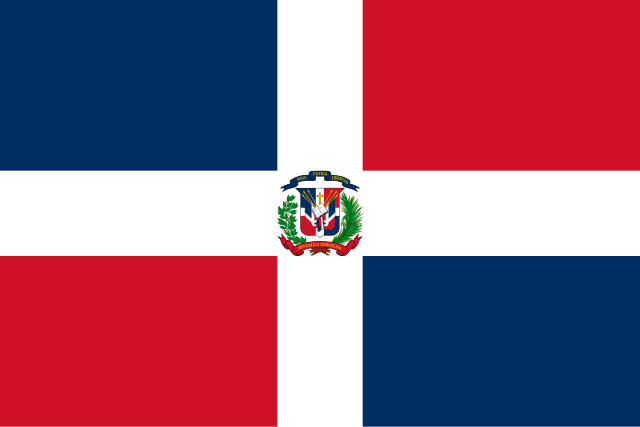

About Me
My name is Yerlin and I go by Alex. I was born in Dominican Republic and live with my family in Santo Domingo. I am currently working as an Humanitarian Projects Specialist in the administrative officces for The Church Of Jesuscrist of Latter-days Saints. My daughter is my world and I love spending time with my family. I love to read and I love to learn new things.
Santo Domingo, Dominican Republic

The Dominican Republic is a Caribbean country that occupies the eastern two-thirds of the Caribbean island of Hispaniola. The western one-third of Hispaniola is occupied by the country of Haiti. To the north lies the North Atlantic Ocean, while the Caribbean Sea lies to the south.